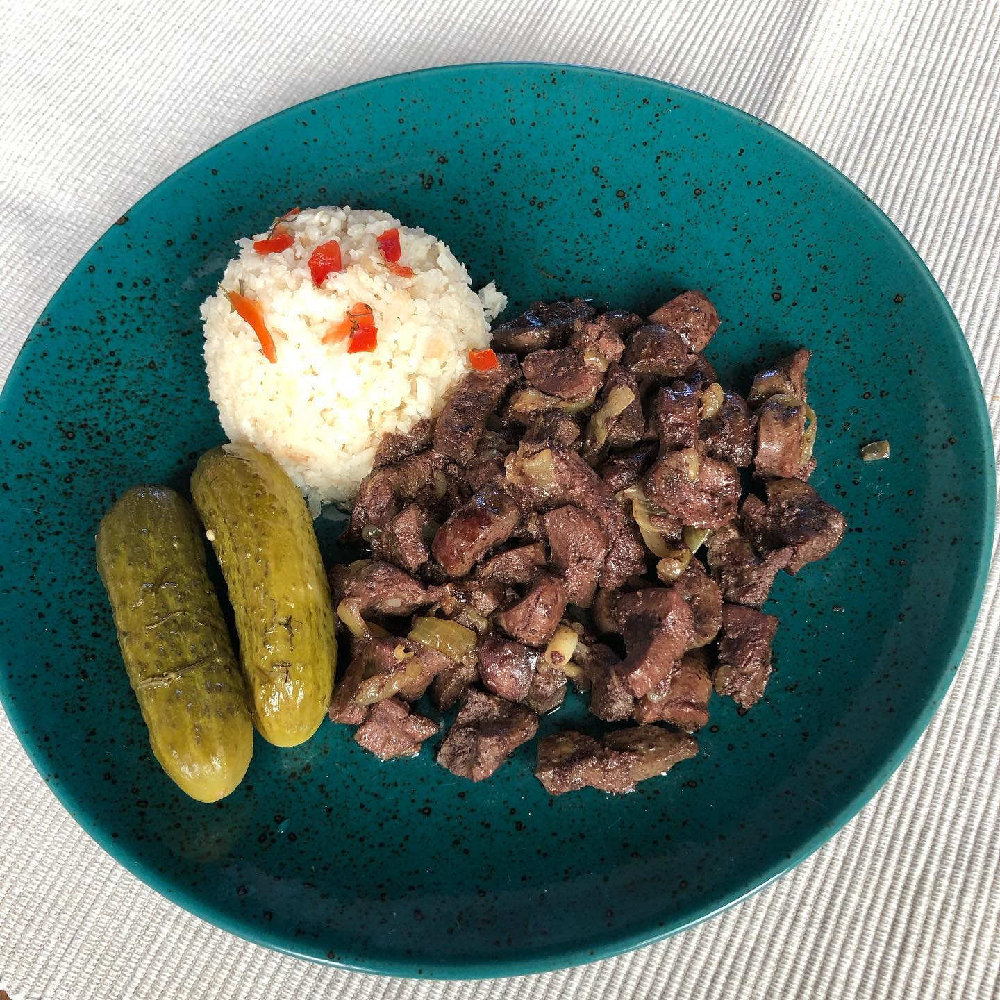

Vnútornosti podľa @monikakomorasova — Normy Jedál
Karfiolová ryža
1 menší karfiol rozoberieme a umyjeme. Odkrojíme len vrchné časti , stonky môžeme použiť do polievky.
Ružičky postrúhame na strúhadle. Ja používam kuchynský robot, pretože nevznikne toľko neporiadku okolo. Po nastrúhaní nám vzniknú čiastočky podobné ryži.
Na panvicu dám 2 PL bravčovej masti, ktorú rozohrejem a karfiolovú hmotu restujeme cca 5 minút. Potom dotiahnem z ohňa, prikryjem a nechám ešte 10 min. pod pokrievkou.
Dnes k testovaným hovädzím obličkám, ktoré sú najlepším zdrojom termostabilného vit. C.
Viac receptov nájdete v najnovšej knihe Zeleninové recepty, ktorú môžete zakúpiť už teraz na mojom webe. Pozri do profilu 🔝🔝🔝#citimsaskvele #vitaminc #idealnavaha #zdravie #bezdoplnkov #protizapalovestravovanie #vnutornosti #obličky